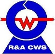

RWIA & CCRW 2026
资料下载
征稿通知、正式邀请函及受邀人员回执。
征稿要求统一为：摘要截止2026年11月30日；Technical Notes 不超过6页。中文征文原件末尾日期表及短文页数与此不一致，请按上述要求准备稿件。
邀请回执适用于学术指导委员会委员及特邀报告人，不是普通代表报名表。

RWIA & CCRW 2026
第9届国际机器人焊接、智能化与自动化会议
暨第16届中国机器人焊接会议
2026年12月11—13日 · 中国上海
RWIA & CCRW 2026
征稿通知、正式邀请函及受邀人员回执。
邀请回执适用于学术指导委员会委员及特邀报告人，不是普通代表报名表。